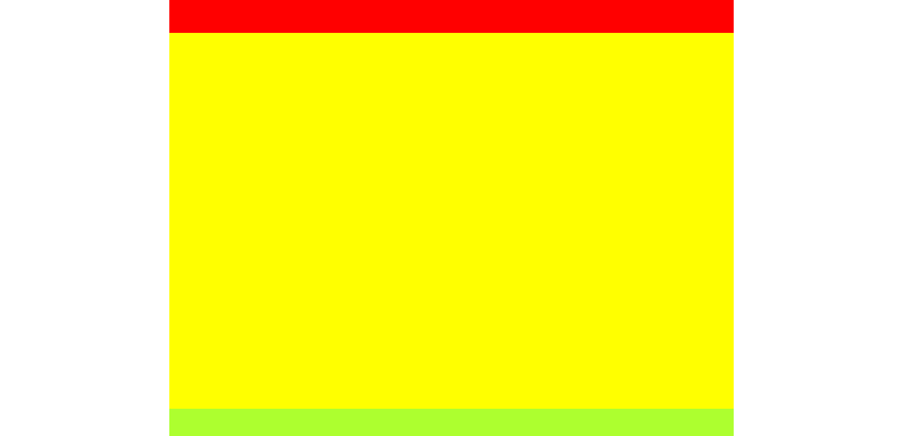
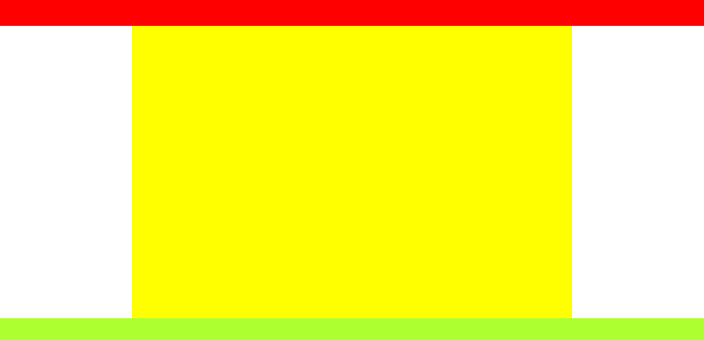
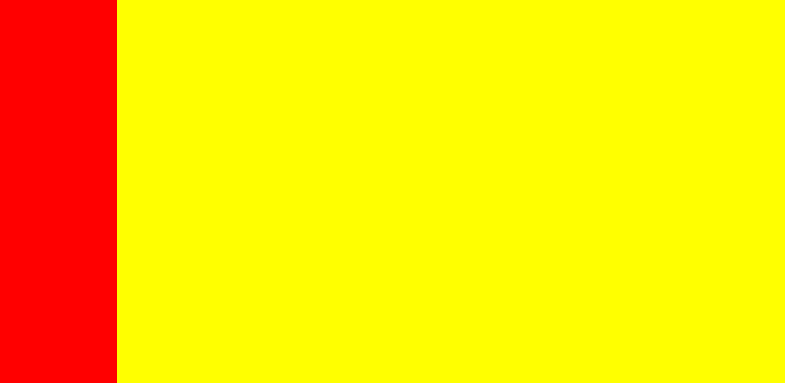
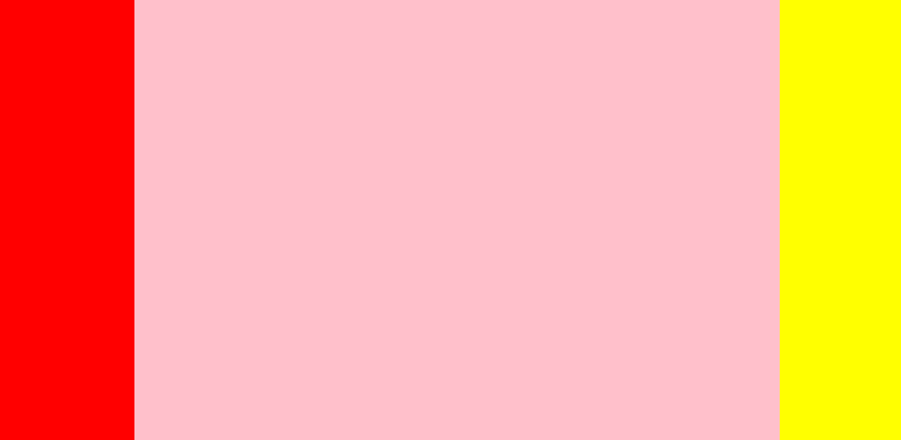
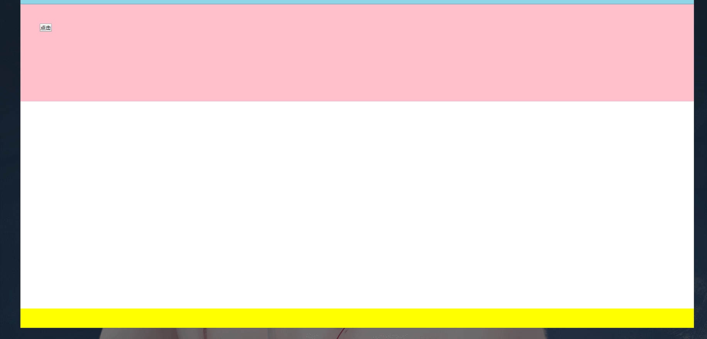
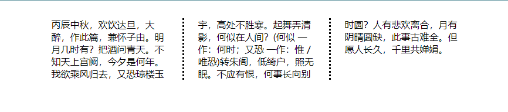
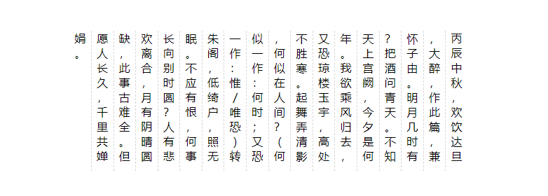

原文出处:本文由博客园博主妖色调提供。
原文连接:https://www.cnblogs.com/loveyt/p/11384533.html
原文连接:https://www.cnblogs.com/loveyt/p/11384533.html
说起布局其实就和盖房子的道理一样，你首先要盖好房子的模型（规划好页面的布局），房子的雏形盖好后就是往房子里面布置家具了（在布局里面添加东西），这样，房子盖好后不论你往里面添加什么家具也不能影响房子（杠精请坐下），布局也一样，布局完成后，只需要在布局的容器里面添加更加细化的东西就行了。切忌边写内容边布局，这可能因为内容导致布局的改写，费时费力、得不偿失
实现布局的常用方法
1. float
Float 的设计初衷仅仅是为了实现文字环绕效果,所以了解了 Float的设计初衷,我们就能明白 Float的特有的行为表现了
包裹
- 坚挺
- 收缩
- 隔绝
这种特性称之为 BFC（Block Formatting Context——块级格式化上下文）, 具有这种包裹性的元素有
- display:inline-block / table-cell
- position: absolute/fixed/sticky
- overflow:hidden/scroll
破坏
如果浮动元素是某一个元素的父元素,那么子元素就会溢出父元素,而父元素将会塌陷
2. 定位
优点：
- 使用定位属性，结合边偏移属性，可以将元素放置在任何需要的位置，这样做的好处在于，无需考虑元素本身的显示方式和页面代码中所处的位置，直接将元素分离出来进行定位。
缺点：
- 在使用绝对定位属性的时候，由于元素的位置已经确定，并独立于文档之外，所以当元素中的内容发生变化时，其他元素无法根据绝对定位元素的变化而作相应的调整，最终将会导致页面中内容重叠或者产生空白。
- 在使用相对定位属性的时候，由于页面中会保留元素原来占有的位置，所以会在原有位置上产生空白区域，同时，由于相对定位的优先级高于普通元素所以也可能造成元素内容的重叠
如果可以的情况下，轻易不要使用定位进行布局，复杂的层级关系会导致你的定位越来越乱，难以维护。
3. Table
优点：
- 容易上手（据说是。。。）
- 可以形成复杂的变化，简单快速
- 表现上更加“严谨”，在不同浏览器中都能得到很好的兼容
- 适合数据展示
缺点：
- Table要比其它html标记占更多的字节。(延迟下载时间，占用服务器更多的流量资源。)
- Tablle会阻挡浏览器渲染引擎的渲染顺序。(会延迟页面的生成速度，让用户等待更久的时间。)
- Table里显示图片时需要你把单个、有逻辑性的图片切成多个图。(增加设计的复杂度，增加页面加载时间，增加HTTP会话数。)
- Table会影响其内部的某些布局属性的生效(比如
里的元素的height:100%)(这会限制你页面设计的自由性。) 4. Grid
Grid适用于布局大画面。它们使页面的布局变得非常容易，甚至可以处理一些不规则和非对称的设计。Grid布局则是将容器划分成"行"和"列"，产生单元格，然后指定"项目所在"的单元格，可以看作是二维布局
5. Flex
Flex非常适合对齐元素内的内容。你可以使用Flex来定位设计上一些较小的细节。Flex布局是轴线布局，只能指定"项目"针对轴线的位置，可以看作是一维布局。- 不需要进行浏览器兼容测试
- 超简洁语法、响应式布局
- 兼容性较差
CSS常见布局
单列布局
常见的单例布局有两种


- 一种就是头部（header）和内容（main）、尾部（footer）等宽居中的布局
- 另一个就是头部（header）和尾部（footer）等宽，内容（main）略窄居中的布局
特点：定宽、水平居中
两列布局

特点：侧栏固定宽度（如广告等）、主栏自适应
实现方法有很多，这里只举一种方法（以左侧栏固定为例）
DOM
<div class="main"> <!--左侧--> <div class="left"></div> <!--右侧--> <div class="right"></div> </div>CSS
// 页面 .main{ display: flex; height: 100vh; // 左侧 .left{ background: red; width: 300px; } // 右侧 .right{ background: yellow; flex: 1 1 auto; } }三列布局

- 一种是两端侧栏宽度固定、中间栏自适应
- 一种是一端侧栏与中间栏宽度固定、另一端侧栏自适应
实现方法有很多，这里只举一种方法（以第一个为例）
DOM
<div class="box"> <!--主要内容--> <div class="middle"></div> <!--左侧边栏--> <div class="left"></div> <!--右侧边栏--> <div class="right"></div> </div>CSS
// 页面 .box{ display: flex; height: 100vh; min-width: 700px; // 左侧边栏 .left{ order: 0; background: red; width: 300px; } // 主要内容 .middle{ order: 1; background: pink; flex: 1 1 auto; } // 右侧边栏 .right{ order: 2; background: yellow; width: 300px; } }注意：这里我们把
<div class="middle"></div>放在了最上方，因为DOM是按顺序渲染的，所以优先加载主要内容，但这会导致位置的先后顺序错乱，这里可以用flex布局的order属性来改变位置的先后顺序粘连布局

特点：
- 当内容
<main>的高度足够长时，<main>后面的<footer>会紧跟在<main>元素的后面 - 当
<main>元素的高度不足的时候（比如小于屏幕的高度），<footer>能够‘粘连’在屏幕底部
第一种
DOM
<div class="box"> <!--内容外框--> <div class="middle"> <!--主要内容--> <div class="main"></div> </div> <!--底部--> <div class="footer"></div> </div>CSS
// 页面 .box{ height: 100%; // 内容外框 .middle{ min-height: 100%; // 主要内容 .main{ padding-bottom: 50px; background: pink; height: 300px; // 高度应该是内容的高度（这里只是展示用） } } // 底部 .footer{ background: yellow; height: 50px; margin-top: -50px; } }第二种（flex）
DOM
<div class="box"> <!--内容外框--> <div class="middle"> <!--主要内容--> <div class="main"></div> </div> <!--底部--> <div class="footer"></div> </div>CSS
// 页面 .box{ display: flex; flex-direction: column; // 内容外框 .middle{ flex-basis: 100vh; // min-height: 100vh;也可以 // 主要内容 .main{ padding-bottom: 50px; background: pink; height: 30vh; // 高度应该是内容的高度（这里只是展示用） } } // 底部 .footer{ background: yellow; height: 50px; margin-top: -50px; } }这两种的方法区别不大，主要看你喜欢用那个(～￣▽￣)～
多栏布局（Multi-Columns Layout）
多栏布局是CSS3新增布局中的一种，尽管它很低调。
我们可以用它实现分栏的效果

DOM
<div class="box"> <div class="middle"> 丙辰中秋，欢饮达旦，大醉，作此篇，兼怀子由。明月几时有？把酒问青天。不知天上宫阙，今夕是何年。我欲乘风归去，又恐琼楼玉宇，高处不胜寒。起舞弄清影，何似在人间？(何似 一作：何时；又恐 一作：惟 / 唯恐)转朱阁，低绮户，照无眠。不应有恨，何事长向别时圆？人有悲欢离合，月有阴晴圆缺，此事古难全。但愿人长久，千里共婵娟。 </div> </div>CSS
// 页面 .middle{ column-count: 3; column-rule: dotted; column-gap: 50px; width: 700px; margin: 30px auto }也可以用它来实现古书的排版

DOM
<div class="box"> <div class="middle"> 丙辰中秋，欢饮达旦，大醉，作此篇，兼怀子由。明月几时有？把酒问青天。不知天上宫阙，今夕是何年。我欲乘风归去，又恐琼楼玉宇，高处不胜寒。起舞弄清影，何似在人间？(何似 一作：何时；又恐 一作：惟 / 唯恐)转朱阁，低绮户，照无眠。不应有恨，何事长向别时圆？人有悲欢离合，月有阴晴圆缺，此事古难全。但愿人长久，千里共婵娟。 </div> </div>CSS
// 页面 .middle{ width: 300px; height: 200px; margin: 100px auto; columns: 10; column-rule: 1px dashed rgb(213,213,213); direction: rtl; word-wrap: break-word; text-align: center; }瀑布流

使用css的multi-column为例来实现
DOM
<div id="Falls"> <!--每一个模块--> <div class="item"> <!--图片--> <img class="item_img" src="地址"/> <!--图片信息--> <div class="image_info">努力保持一个好心情</div> </div> ... </div>CSS
// 页面 #Falls{ margin: 0 auto; column-count: 5; column-width: 240px; column-gap: 20px; // 每一个模块的样式 .item{ break-inside: avoid; // 防止多列布局，分页媒体和多区域上下文中的意外中断 margin-bottom: 10px; background: #fff; border: 1px solid #ccc; // 图片的样式 .item_img{ width: 100%; vertical-align: middle; } // 图片信息 .image_info{ padding: 5px 10px; text-align: center; } } }